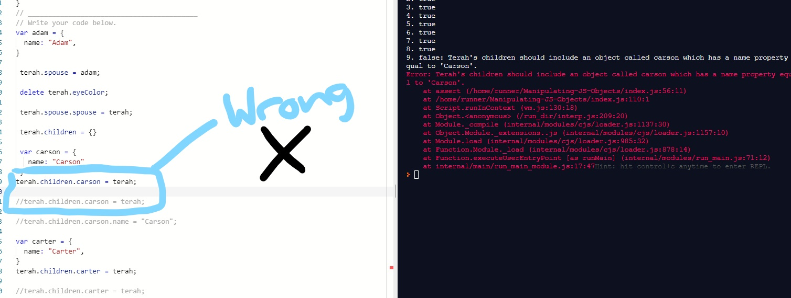
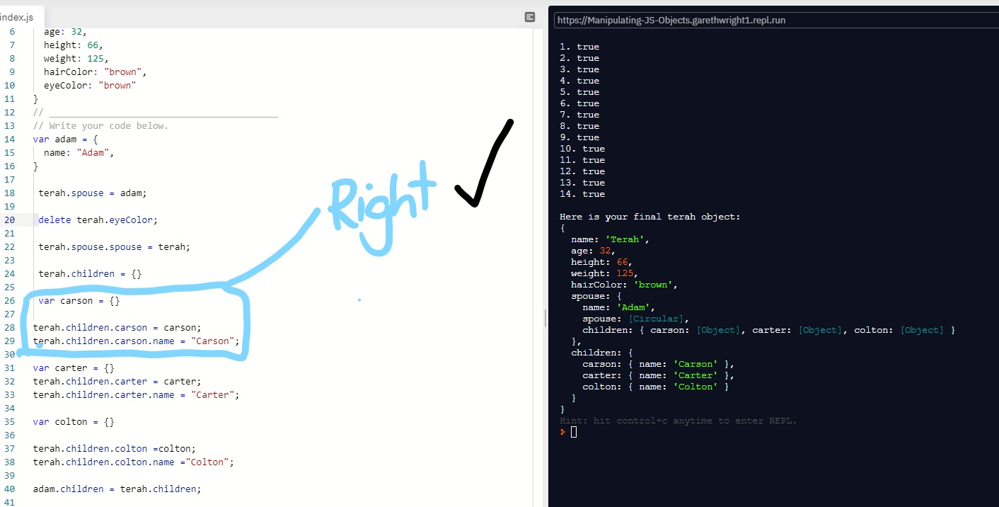
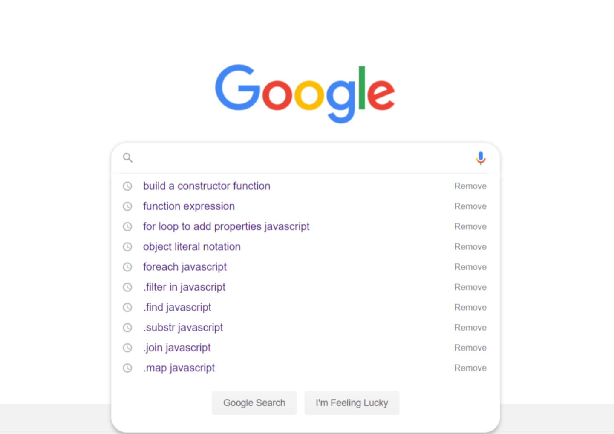
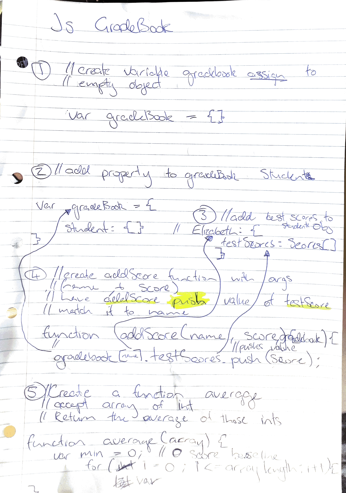

I got blocked on a simple issue when looking back now but in the moment it felt like brain surgery, i tried to assign a person a name but it kept assigning the wrong person. The problem was, while trying to change the name of another person in an array/list of people, but i kept assigning the name of the list owner, rather than having the list owner, and then assigning another name to the correct person.
I decided to take a walk and get fresh air, while walking i attempted the rubber ducky method of problem solving but with a tree. i got the clarity in a moment of calm to think clearly and solve my mini big issue. once home i solved the problem in a matter of minutes, and got on a roll and cleared out two more kata challenges before hitting any major issues.
the problem or error was circling / i was assigning a name to the same name. Creating a loop like effect where i gave a name terah And then tried to apply the same name terah to her children object, therefore overwriting the new object name.
rubber ducky method, googling and asked coaches for help
Stressed and annoyed is how i felt. Stressed because the problem of fixing a problem when you dont understand what you have done wrong, it is a very difficult job, you have no idea where to start, I find myself on countless webpages seeking answers all of which seem vague or over complicated, and the stress of trying to learn something very fast in order to keep up with this programme all piles on making it feel like a big burden. And at the same time I get annoyed for not understanding, did i miss something? where did we learn this?, goes through my head when hitting challenges i struggle with, and when seeking help i didnt find useful because mid way through getting help, notifications were turned off, which is especially triggering while stuck and stressed, I left university because they did not care about the individual, they only care about the money i gave them to go there, and when i was stuck on these foundation problems with no help except the internet, I got the same feeling. which was swiftly gone when i achieved the task myself and i felt much better for doing it all and solving the problem myself.
I learnt that, trying to code while stressed and annoyed is a complete waste of time, you must take breaks to clear the mind. And take a new approach to solving the issue if ones not working, Einstein said "the definition of insanity is doing the same thing over and over and expecting a different result". When your stuck, step back and reflect and try again, this could be problematic in a real world job, you cant exactly just step out for an 30 minutes every time your stuck or stressed, especially if your task is extremely complicated and could happen multiple times a day, the boss will just say thats not an effect use of company time, but for me that means i need to learn more about the syntax itself becaause i found the ideas of the code and what was expected but the implentation of code i need work on and some effective stratergys for problem solving.
well its only been a few days so its going to take time to master these techniques/ implement them into my daily habbits, there was a few useful techniques i had not heard of that i will be using cause i had some success but at the moment i am not confident, i could not go out and do anything of which i want to do, i am actually less confident this week than I was in the first week of this course.